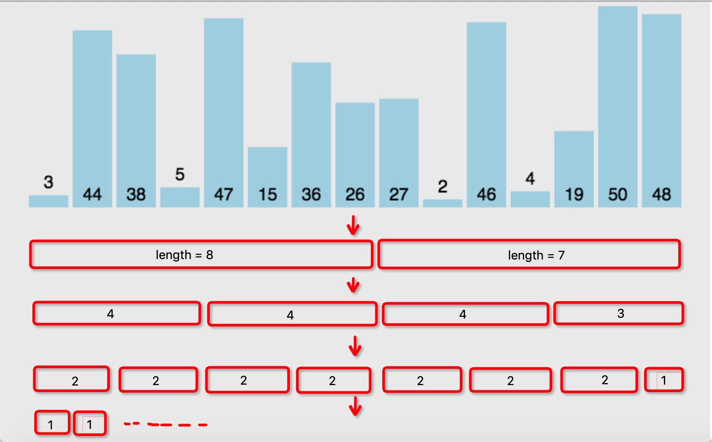

原始数组：[3,44,38,5,47,15,36,26,27,2,46,4,19,50,48]
function mergeSort(arr) { var len = arr.length; if(len < 2) { return arr; } var middle = Math.floor(len / 2), left = arr.slice(0, middle), right = arr.slice(middle); return merge(mergeSort(left), mergeSort(right)); } function merge(left, right) { var result = []; while (left.length>0 && right.length>0) { if (left[0] <= right[0]) { result.push(left.shift()); } else { result.push(right.shift()); } } while (left.length) { result.push(left.shift()); } while (right.length) { result.push(right.shift()); } return result; }
排序结果：
当递归层数越来越深时，对于JS来说，可能会造成调用栈溢出。JS目前没有提供尾递归优化的功能，虽然ES6已经有相关的提案，但是实现的浏览器并不多，nodejs也只有高版本才能支持。
因此应当尽量避免深层次的递归调用，可以对归并排序进行改造，从递归版本改造成迭代版本。